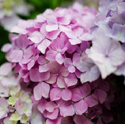
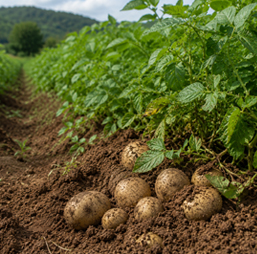
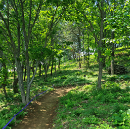
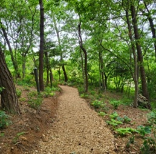
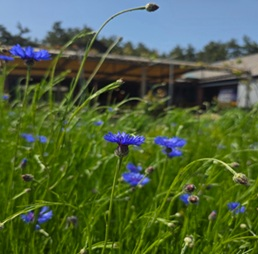
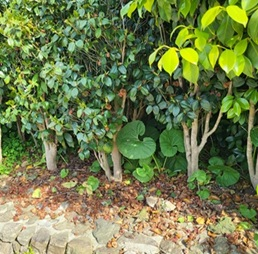
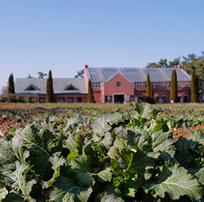
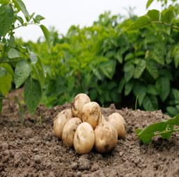
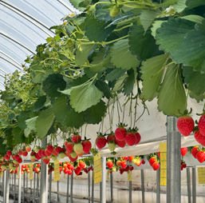

-

고인돌 숲 정원
농원과 수목원, 빌리지를 잇는 수국 그늘 정원
-

감자농부의 여름알림
봄에 심었던 감자를 수확하며 여름을 깨우다.
-

치유의 숲 정원
자연이 만들어낸 치유
-

상하수목원
여름이라 더 푸르고 바다보다 시원한 곳
-

봄 꽃나무 전시회
자연과 함께 만든 계절 전시회
-

봄나물이 가장 향긋한 지금, 머위
동백나무 밑에 숨겨진 봄의 조각
-

상하농원의 봄이 찾아 왔나 봄~
따뜻한 봄의 상하농원을 소개합니다!
-

봄을 심는 시간
상하농원 봄맞이 텃밭체험의 시작을 알리다.
-

작은 습관으로 키워보는 사랑
정성과 사랑을 담아 키운 작은 나의 친구 딸기